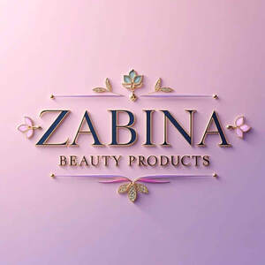

Trade Mark Journal No.2026/007 13 February 2026
UK00004332814 30 January 2026 (3)

- Class 3
- Beauty lotions; Beauty care cosmetics; Beauty serums; Beauty creams; Cosmetic products in the form of aerosols for skincare; Perfumery products; Beauty gels; Beauty milks; Beauty masks; Masks (Beauty -); Cosmetic products for the shower; Beauty soap; Beauty creams for body care; Beauty milk; Beauty balm creams; Cosmetic products in the form of aerosols for skin care; Beauty serums with anti-ageing properties; Skincare cosmetics; Natural cosmetics; Beauty preparations for the hair; Skin care products for animals; Sets of cosmetic oral care products; Soap products; Distilled oils for beauty care; Beauty care preparations; Cleansing products for the eyes; Facial beauty masks; Cosmetics; Beauty tonics for application to the body; Beauty tonics for application to the face; Eyelashes; Eyelashes (False -); False eyelashes; Artificial eyelashes; Cosmetics for eye-lashes; Eyebrow mascara; Hair mascara; Cosmetic preparations for eyelashes; Eyelashes (Cosmetic preparations for -); Eyelashes (Adhesives for affixing false -); Eyelash tint; Mascara; Eyelash dye; Eyebrows [false]; Cosmetic preparations for eye lashes; Self-adhesive false eyebrows; Long lash mascaras; Eyes make-up; Eyebrow cosmetics; Eyelid doubling makeup; Eyelid pencils; Eyeliner; Cosmetics for eye-brows; Hair cosmetics; Mascaras; Liners [cosmetics] for the eyes; Hair serums; Eyelid shadow; Hair moisturisers; Eye makeup; Eye-shadow; Hair moisturizers; Eye make-up; Hair creams; Hair masks; Colour cosmetics for the eyes; Hair balms; Hair lighteners; Eye concealers; Hair lotions; Tints for the hair; Hair mousses; Hair frosts; Eye cosmetics; Eyebrow pencils; Pencils (Eyebrow -); Eyebrow gel; Lip makeup; Cosmetics for the use on the hair; False fingernails; Eye make-up removers; Eyeliner pencils; Hair glaze; Hair lacquers; Eyebrow colors; Colouring lotions for the hair; Hair colourants; Hair bleaches; Cosmetic pencils for cheeks; Cosmetic hair lotions; Hair glazes; Dyes for the hair; Hair dyes; Eyes pencils; Hair cream; Eye makeup remover; Hair sprays; Cosmetic preparations for the hair and scalp; Hair lotion; Hair mousse; Skin make-up; False hair (Adhesives for affixing -); Hair gel; Moisturiser; Anti-ageing moisturiser; Moisturisers; Skin moisturiser; Skin moisturisers; Skin moisturizer; Moisturising creams; Moisturisers [cosmetics]; Moisturising skin lotions [cosmetic]; Moisturising skin creams [cosmetic]; Cosmetic moisturisers; Moisturising body lotion [cosmetic]; Moisturizing creams; Moisturizers; Skin moisturizers; Skin lotion; Exfoliant creams; Non-medicated moisturisers; Skin moisturizer masks; Moisturising creams, lotions and gels; Anti-aging moisturizers; Skin cleansing lotion; Body moisturisers; Mattifying gel cream; Skin moisturizers used as cosmetics; Facial moisturisers [cosmetic]; Exfoliating creams; Moisturising gels [cosmetic]; Anti-ageing creams; Oils for moisturising the skin after sunbathing; Anti-aging moisturizers used as cosmetics; Pre-shave creams; Moisturizing body lotions; Anti-ageing serum; Creams for firming the skin; Sunscreen creams; Hair moisturising conditioners; Facial moisturizers; Skin lotions; Lotions for the skin; Skin emollients; Hydrating creams for cosmetic use; Facial lotion; Skin hydrators; Shaving lotion; Skin cleansing cream; Exfoliants for the cleansing of the skin; Skin cleansing cream [non-medicated]; Non-medicated skin serums; Anti-wrinkle creams; Suntan lotion [cosmetics]; Skin creams; Creams for the skin; Sunscreen lotions; Moisturizing milk; Suncare lotions; Moisturizing preparations for the skin; Skin cleansers; Blemish balm creams; Sunscreen cream; Wipes impregnated with a skin cleanser; Suntan creams [self-tanning creams]; Anti-ageing creams [for cosmetic use]; Sunscreen creams [for cosmetic use]; Anti-aging creams; Emollient shampoos; Skin cream; Skin emollients [non-medicated]; Moisturising concentrates [cosmetic]; Cosmetic nourishing creams; Skin creams [non-medicated]; Non-medicated skin creams; Day lotion; Non-medicated skin lotions; Sun-block lotions; Skin whitening creams; Creams (Skin whitening -); Skin cleansers [non-medicated]; Bath lotion; Skin balms (Non-medicated -); Non-medicated skin balms; Anti-wrinkle cream; Cosmetic creams for dry skin; Creams for tanning the skin; Moisturising preparations; Skin balms [cosmetic]; Skin toner; Anti-aging cream; Cream for whitening the skin; Whitening the skin (Cream for -); Suncare lotions [for cosmetic use]; Sun tan lotion; Cosmetic creams for the skin; Skin creams [cosmetic]; Skin creams [for cosmetic use]; Non-medicated skin clarifying lotions; Facial concealer; Tissues impregnated with a skin cleanser; Anti-wrinkle creams [for cosmetic use]; Cleansing lotions; Skin cleansers [cosmetic]; Scented body lotions and creams; Milky lotions for skin care; Cleansing creams; Skin cream [for cosmetic use]; Skin recovery creams [cosmetics]; Anti-wrinkle cream [for cosmetic use]; Exfoliants for the care of the skin; Cloths impregnated with a skin cleanser; Body mask lotion; Anti-aging serum for cosmetic use; Anti-aging creams [for cosmetic use]; Moist wipes impregnated with a cosmetic lotion; Non-medicated cleansing creams; Shaving balm; Essential oils for fragrancing; Essential oils for cosmetic purposes; Essential oils as perfume for laundry purposes; Natural oils for perfumes; Cuticle oils; Scented oils; Body oils; Perfume oils; Oils for the skin; Cosmetics in the form of oils; Massage oils; Oils for toiletry purposes; Natural oils for cleaning purposes; Mineral oils [cosmetic]; Ethereal oils for fragrancing; Shaving oils; Hair oils; Facial oils; Sun-tanning oils; Aromatic oils for the bath; Bath oils; Cosmetic oils for the epidermis; Non-medicated oils; Suntan oils [cosmetics]; Body oils [for cosmetic use]; Baby oils; Massage oils and lotions; Oils for cleaning purposes; Natural oils for cosmetic purposes; Soap; Deodorant soap; Soap (Deodorant -); Bath soap; Shower soap; Soaps; Perfumed soap; Handmade soap; Bars of soap; Bath soaps; Body soap.
Lorraine Fudge